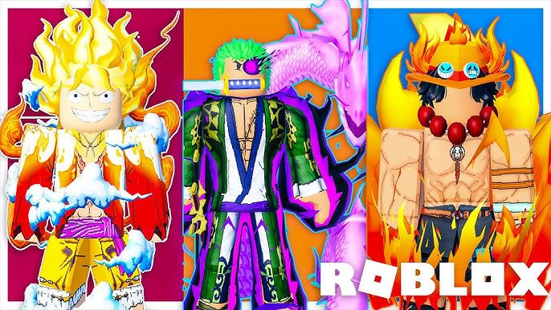

Así es. En roblox existen distintos tipos de skins, aunque en si son llamados "avatares". Cada avatar puede ser personalizado al gusto por el jugador (y puede tener cuantos quiera), combinando ropas, accesorios, animaciones y hasta apariencias no humanas.
Toda esta libertad de personalización deja a los jugadores expresar su personalidad dentro del juego y por eso, con pasar los años, se han creado distintos estilos como:
Son los avatares básicos que todos tienen cuando empiezan. Puedes cambiar color de piel, cara y ropa sencilla.
Son los famosos "Tocinos". Usuarios compran ropa, cabello, accesorios y armas en la tienda de Roblox (Roblox Catalog o Avatar Shop) para armar su estilo único.
(Pueden ser súper variados: desde estilos casuales, futuristas, góticos, medievales, etc.)
Basados en personajes de animes, películas, juegos o series. Por ejemplo, alguien puede vestirse como un ninja, un guerrero, un mago o un personaje famoso.
Algunos avatares tienen paquetes de animación para que caminen o hagan gestos distintos, como bailar o moverse elegante.
Con piezas mecánicas, luces de neón y todo eso que da onda tecnológica o futurista.
Como dragones, monstruos, animales, alienígenas o criaturas fantásticas. Estos suelen usar modelos o accesorios especiales.
Ropa y accesorios raros que Roblox sacó hace años o por eventos especiales, que son súper buscados por coleccionistas.